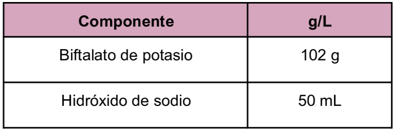
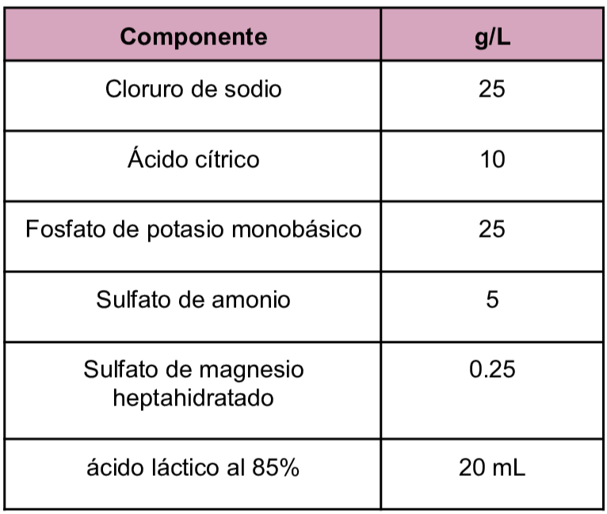
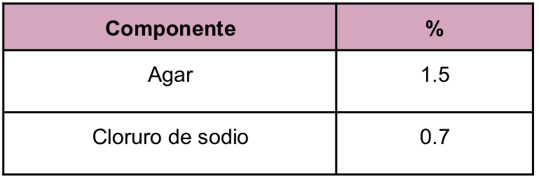

Medio de cultivo de tipo bifásico xénico utilizado en el aislamiento y mantenimiento de Entamoeba histolytica.
Composición
Medio de cultivo de tipo bifásico xénico utilizado en el aislamiento y mantenimiento de Entamoeba histolytica.
Composición
Se deben preparar seis soluciones, a continuación se presentan:

pH a 25°C 6.3±0.2

pH a 25°C 7.0±0.2

Se colocan cantidades de 5mL agar, 3 mL de Biftalato, 1 mL medio RBS y 50 mcL de eritromicina
Jiménez, I. (2009) Propuesta para la elección de medios de cultivo y creación de un cepario de parásitos protozoarios en la Facultad de Química. https://ru.dgb.unam.mx/server/api/core/bitstreams/23c04e28-b8ba-4370-a0d2-00d071535b1b/content